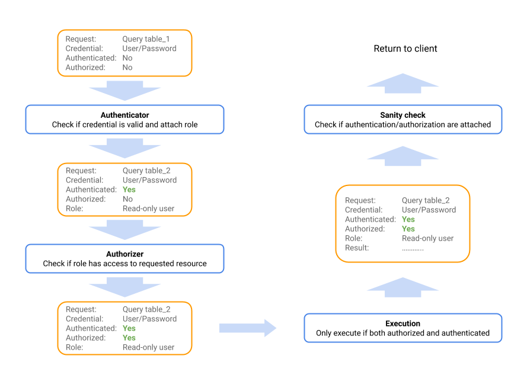
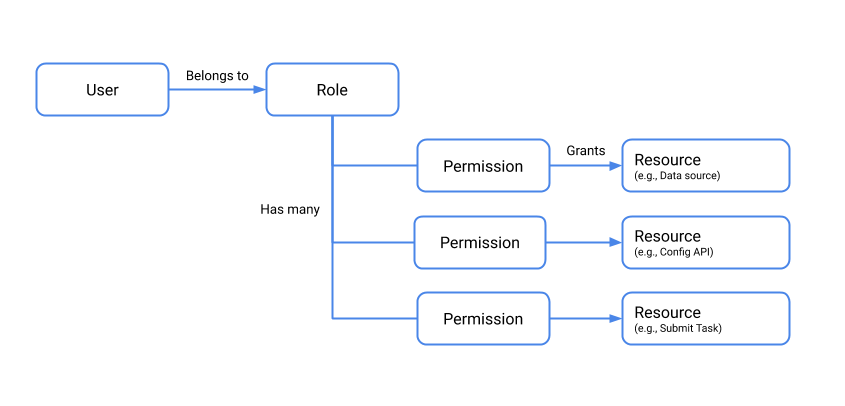

1.1. Overview
By default, security features in Druid are disabled, which simplifies the initial deployment experience. However, security features must be configured in a production deployment. These features including TLS, authentication, and authorization.
To implement Druid security, you configure authenticators and authorizers. Authenticators control the way user identities are verified, while authorizers map the authenticated users (via user roles) to the datasources they are permitted to access. Consequently, implementing Druid security also involves consideration of your datasource scheme, given they represent the granularity at which data access permissions are allocated.
The following graphic depicts the course of request through the authentication process:

This document gives you an overview of security features in Druid and how to configure them, and some best practices for securing Druid.
1.2. Best practices
- Do not expose the Druid Console without authentication on untrusted networks. Access to the console effectively confers access the file system on the installation machine, via file browsers in the UI. You should use an API gateway that restricts who can connect from untrusted networks, whitelist the specific APIs that your users need to access, and implements account lockout and throttling features.
- Grant users the minimum permissions necessary to perform their functions. For instance, do not allow user who only need to query data to write to data sources or view state.
- Disable JavaScript, as noted in the Security section of the JavaScript guide.
- Run Druid as an unprivileged Unix user on the installation machine (not root).
This is an important point! Administrator users on Druid have the same permission as the Unix user account it is running under. If the Druid process is running under the root user account in the OS, then Administrator users on Druid can read/write all files that the root account has access to, including sensitive files such as
/etc/passwd.
You can configure authentication and authorization to control access to the the Druid APIs. The first step is enabling TLS for the cluster nodes. Then configure users, roles, and permissions, as described in the following sections.
The configuration settings mentioned below are primarily located in the common.runtime.properties file. Note that you need to make the configuration changes on each Druid server in the cluster.
1.3. Enable TLS
The first step in securing Druid is enabling TLS. You can enable TLS to secure external client connections to Druid as well as connections between cluster nodes.
The configuration steps are:
- Enable TLS by adding
druid.enableTlsPort=truetocommon.runtime.propertieson each node in the Druid cluster. - Disable the non-TLS port by setting
druid.enablePlaintextPorttofalse. - Follow the steps in Understanding Certificates and Keys to generate or import a key and certificate.
Configure the keystore and truststore settings in
common.runtime.properties. The file should look something like this:druid.enablePlaintextPort=false druid.enableTlsPort=true druid.server.https.keyStoreType=jks druid.server.https.keyStorePath=imply-keystore.jks druid.server.https.keyStorePassword=secret123 # replace with your own password druid.server.https.certAlias=druid druid.client.https.protocol=TLSv1.2 druid.client.https.trustStoreType=jks druid.client.https.trustStorePath=imply-truststore.jks druid.client.https.trustStorePassword=secret123 # replace with your own password- Add the
simple-client-sslcontextextension todruid.extensions.loadListincommon.runtime.properties. This enables TLS for Druid nodes acting as clients. - Restart the cluster.
For more information, see TLS support and Simple SSLContext Provider Module.
Druid uses Jetty as its embedded web server. Therefore you refer to Understanding Certificates and Keys for complete instructions.
1.4. Enable an authenticator
To authenticate requests in Druid, you configure an Authenticator. Authenticator extensions exist for HTTP basic authentication, LDAP, and Kerberos.
The following takes you through sample configuration steps for enabling basic auth:
- Add the
druid-basic-securityextension todruid.extensions.loadListincommon.runtime.properties. For the quickstart installation, for example, the properties file is atconf/druid/cluster/_common:druid.extensions.loadList=["druid-basic-security", "druid-histogram", "druid-datasketches", "druid-kafka-indexing-service", "imply-utility-belt"] Configure the basic Authenticator, Authorizer, and Escalator settings in the same common.runtime.properties file. For example:
# Druid basic security druid.auth.authenticatorChain=["MyBasicMetadataAuthenticator"] druid.auth.authenticator.MyBasicMetadataAuthenticator.type=basic druid.auth.authenticator.MyBasicMetadataAuthenticator.initialAdminPassword=password1 druid.auth.authenticator.MyBasicMetadataAuthenticator.initialInternalClientPassword=password2 druid.auth.authenticator.MyBasicMetadataAuthenticator.credentialsValidator.type=metadata druid.auth.authenticator.MyBasicMetadataAuthenticator.skipOnFailure=false druid.auth.authenticator.MyBasicMetadataAuthenticator.authorizerName=MyBasicMetadataAuthorizer # Escalator druid.escalator.type=basic druid.escalator.internalClientUsername=druid_system druid.escalator.internalClientPassword=password2 druid.escalator.authorizerName=MyBasicMetadataAuthorizer druid.auth.authorizers=["MyBasicMetadataAuthorizer"] druid.auth.authorizer.MyBasicMetadataAuthorizer.type=basicRestart the cluster.
See Authentication and Authorization for more information about the Authenticator, Escalator, and Authorizer concepts. See Basic Security for more information about the extension used in the examples above, and Kerberos for Kerberos authentication.
1.5. Enable authorizers
After enabling the basic auth extension, you can add users, roles, and permissions via the Druid Coordinator user endpoint. Note that you cannot assign permissions directly to individual users. They must be assigned through roles.
The following diagram depicts the authorization model, and the relationship between users, roles, permissions, and resources.

The following steps walk through a sample setup procedure:
The default Coordinator API port is 8081 for non-TLS connections and 8281 for secured connections.
- Create a user by issuing a POST request to
druid-ext/basic-security/authentication/db/MyBasicMetadataAuthenticator/users/<USERNAME>, replacing USERNAME with the new username. For example:curl -u admin:password -XPOST https://my-coordinator-ip:8281/druid-ext/basic-security/authentication/db/basic/users/mynameIf you have TLS enabled, be sure to adjust the curl command accordingly. For example, if your Druid servers use self-signed certificates, you may choose to include the
insecurecurl option to forgo certificate checking for the curl command. - Add a credential for the user by issuing a POST to
druid-ext/basic-security/authentication/db/MyBasicMetadataAuthenticator/users/<USERNAME>/credentials. For example:
The password is conveyed in thecurl -u admin:password -H'Content-Type: application/json' -XPOST --data-binary @pass.json https://my-coordinator-ip:8281/druid-ext/basic-security/authentication/db/basic/users/myname/credentialspass.jsonfile in the following form:
"password": "password" } `````` { - For each authenticator user you create, create a corresponding authorizer user by issuing a POST request to
druid-ext/basic-security/authorization/db/MyBasicMetadataAuthorizer/users/<USERNAME>. For example:curl -u admin:password -XPOST https://my-coordinator-ip:8281/druid-ext/basic-security/authorization/db/basic/users/myname - Create authorizer roles to control permissions by issuing a POST request to
druid-ext/basic-security/authorization/db/MyBasicMetadataAuthorizer/roles/<ROLENAME>. For example:curl -u admin:password -XPOST https://my-coordinator-ip:8281/druid-ext/basic-security/authorization/db/basic/roles/myrole - Assign roles to users by issuing a POST request to
druid-ext/basic-security/authorization/db/MyBasicMetadataAuthorizer/users/<USERNAME>/roles/<ROLENAME>. For example:curl -u admin:password -XPOST https://my-coordinator-ip:8281/druid-ext/basic-security/authorization/db/basic/users/myname/roles/myrole | jq - Finally, attach permissions to the roles to control how they can interact with Druid at
druid-ext/basic-security/authorization/db/MyBasicMetadataAuthorizer/roles/<ROLENAME>/permissions. For example:
The payload ofcurl -u admin:password -H'Content-Type: application/json' -XPOST --data-binary @perms.json https://my-coordinator-ip:8281/druid-ext/basic-security/authorization/db/basic/roles/myrole/permissionsperms.jsonshould be in the form:
[ { "resource": {```
}, "action": "READ" }, { "resource": { "name": "STATE", "type": "STATE" }, "action": "READ" } ] ```"name": "<PATTERN>", "type": "DATASOURCE"
1.6. Configuring an LDAP authenticator
As an alternative to using the basic metadata authenticator, as shown in the previous section, you can use LDAP to authenticate users. The following steps provide an overview of the setup steps. For more information on these settings, see Properties for LDAP user authentication.
In
common.runtime.properties, add LDAP to the authenticator chain in the order in which you want requests to be evaluated. For example:# Druid basic security druid.auth.authenticatorChain=["ldap", "MyBasicMetadataAuthenticator"]Configure LDAP settings in
common.runtime.propertiesas appropriate for your LDAP scheme and system. For example:druid.auth.authenticator.ldap.type=basic druid.auth.authenticator.ldap.enableCacheNotifications=true druid.auth.authenticator.ldap.credentialsValidator.type=ldap druid.auth.authenticator.ldap.credentialsValidator.url=ldap://ad_host:389 druid.auth.authenticator.ldap.credentialsValidator.bindUser=ad_admin_user druid.auth.authenticator.ldap.credentialsValidator.bindPassword=ad_admin_password druid.auth.authenticator.ldap.credentialsValidator.baseDn=dc=example,dc=com druid.auth.authenticator.ldap.credentialsValidator.userSearch=(&(sAMAccountName=%s)(objectClass=user)) druid.auth.authenticator.ldap.credentialsValidator.userAttribute=sAMAccountName druid.auth.authenticator.ldap.authorizerName=ldapauth druid.escalator.type=basic druid.escalator.internalClientUsername=ad_interal_user druid.escalator.internalClientPassword=Welcome123 druid.escalator.authorizerName=ldapauth druid.auth.authorizers=["ldapauth"] druid.auth.authorizer.ldapauth.type=basic druid.auth.authorizer.ldapauth.initialAdminUser=<ad_initial_admin_user> druid.auth.authorizer.ldapauth.initialAdminRole=admin druid.auth.authorizer.ldapauth.roleProvider.type=ldapUse the Druid API to create the group mapping and allocate initial roles. For example, using curl and given a group named
group1in the directory, run:curl -i -v -H "Content-Type: application/json" -u internal -X POST -d @groupmap.json http://localhost:8081/druid-ext/basic-security/authorization/db/ldapauth/groupMappings/group1mapThe
groupmap.jsonfile contents would be something like:{ "name": "group1map", "groupPattern": "CN=group1,CN=Users,DC=example,DC=com", "roles": [ "readRole" ] }Check if the group mapping is created successfully by executing the following API. This lists all group mappings.
curl -i -v -H "Content-Type: application/json" -u internal -X GET http://localhost:8081/druid-ext/basic-security/authorization/db/ldapauth/groupMappingsAlternatively, to check the details of a specific group mapping, use the following API:
curl -i -v -H "Content-Type: application/json" -u internal -X GET http://localhost:8081/druid-ext/basic-security/authorization/db/ldapauth/groupMappings/group1mapTo add additional roles to the group mapping, use the following API:
curl -i -v -H "Content-Type: application/json" -u internal -X POST http://localhost:8081/druid-ext/basic-security/authorization/db/ldapauth/groupMappings/group1/roles/<newrole>Add the LDAP user to Druid. To add a user, use the following authentication API:
curl -i -v -H "Content-Type: application/json" -u internal -X POST http://localhost:8081/druid-ext/basic-security/authentication/db/ldap/users/<ad_user>Use the following command to assign the role to a user:
curl -i -v -H "Content-Type: application/json" -u internal -X POST http://localhost:8081/druid-ext/basic-security/authorization/db/ldapauth/users/<ad_user>/roles/<rolename>
Congratulations, you have configured permissions for user-assigned roles in Druid!